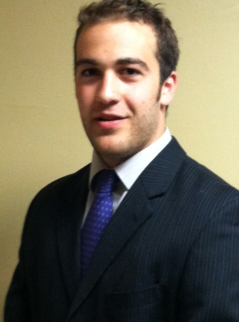
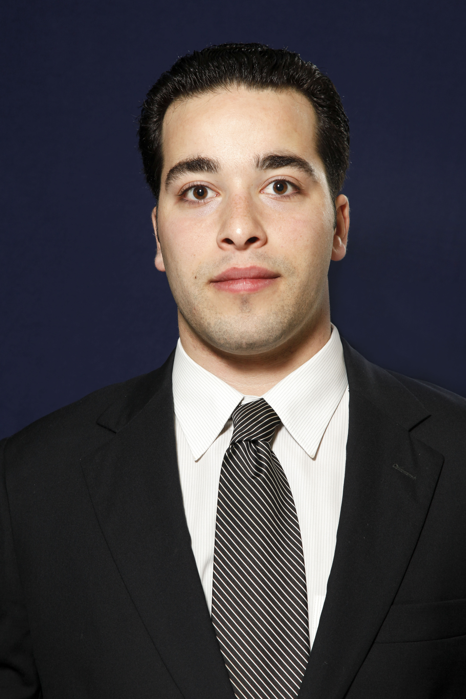
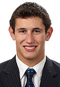
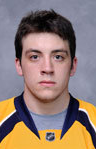
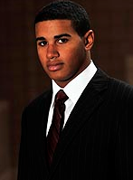

|

Head Coach/President Nik Tasiopoulos
Nik attended Thayer Academy and played
under Larry Rooney before repeating his junior year up at Proctor
Academy where he amassed his highschool best 34 goals his junior
campaign. Nik's career led him to play hockey at Wesleyan University
where he led his team in scoring his first two seasons receiving 1st
Team All-NESCAC his sophomore season of 2011-2012, was named a
semi-finalist for the Joe Concannon Award and selected as All-New England
All Star voted on by the coaches and the Media. Nik has been coaching
spring/summer tournaments for 3 years now and has great relationships
with his players.Nik is also a scout for the Nanaimo Clippers in the BCHL
and a scout for Management One Agency, one of the most successful sports agencies
in the country.
|
|

Assistant Coach/Midwest Director of Player Personnel Max Barron
Max won an AAA
National Championship with the St. Louis AAA Blues in 2004-05 and a Junior B National
Championship with the St. Louis Jr. Blues in 2005-06. After splitting the 2006-07 season
between the Jr. Blues and Little Caesars, he spent one and a half seasons with the Boston
Jr. Bruins. He led the Empire team with over 100 points, tallying 53 goals and 57 assists
in 2007-08, while finishing 3rd at Nationals. During the 2008-09 season, Max went on to
play for the Nepean Raiders, where he finished his junior career. In 2010-11, Max entered
his freshman year at Suffolk University. Over the course of his hockey career, Max has
coached and instructed players in order to help them reach their full potential on and off the ice.
|
|

Associate Coach Kevin Goumas
Kevin Goumas is a top scorer for UNH.
Kevin played his high school hockey at Canterbury where he amassed
53 points his Junior year landing him on the All-New England First Team.
He then took his game to the Indiana Ice in the USHL where he once again
found himself to be amongst leading scorers on his team. In 2010-2011
Kevin entered his Freshman season at UNH where he was named Hockey East
Rookie of the Week on four different occasions and named Rookie of the
Month in February. Kevin equally stresses his school work as he earned
his way on to the Hockey East All-Academic team. In 2011-2012 Kevin finished
with 34 points just one point off the team lead as a Sophomore. Kevin has
been there and plans to share his knowledge in the developing of kids
career while he pursues his own professional career.
|
|

Assisant Coach Garrett Noonan
Garrett was the 112th overall selection
of the Nashville Predators in the 2011 NHL Draft. Garrett Noonan is a defenseman
that knows how to win. He won a Super 8 title with Catholic Memorial, where he was also
named Boston Globe All-Scholastic and MVP of the Catholic Conference his
senior season in 2009. Noonan then went on to play for the Vernon Vipers of
the BCHL and win the RBC Cup. Garrett is now a standout at Boston University
and has found himself amongst the nation's leaders in goals for a defenseman
with 16 in his 2011-2012 Sophomore campaign. As a Sophomore he was selected as
a member to the All-Hockey East 2nd Team and will strive to win a National
Championship in his remaining time at Boston University.
|
|

Kyle Thomas Head Coach Woman's Program
Kyle is a standout All American at
Norwich University. Kyle played for the South Shore Kings in the EJHL before
finding great success in college. He has won a National Championship, been named
to First Team All conference team, an All American, and All New England All Star.
Kyle's father played in the NFL for the Dallas Cowboys and Kyle looks to pursue a
career as a professional athlete as well. Kyle has participated in the Minnesota
Wild's Prospects Camp the last 2 summers and they have shown great interest in him
following his senior campaign.
|